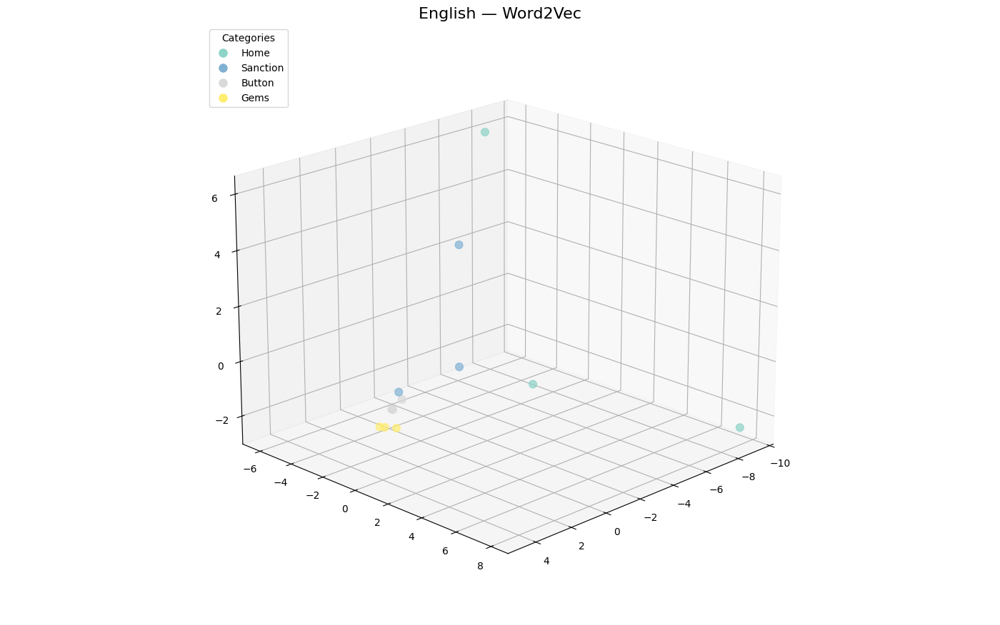
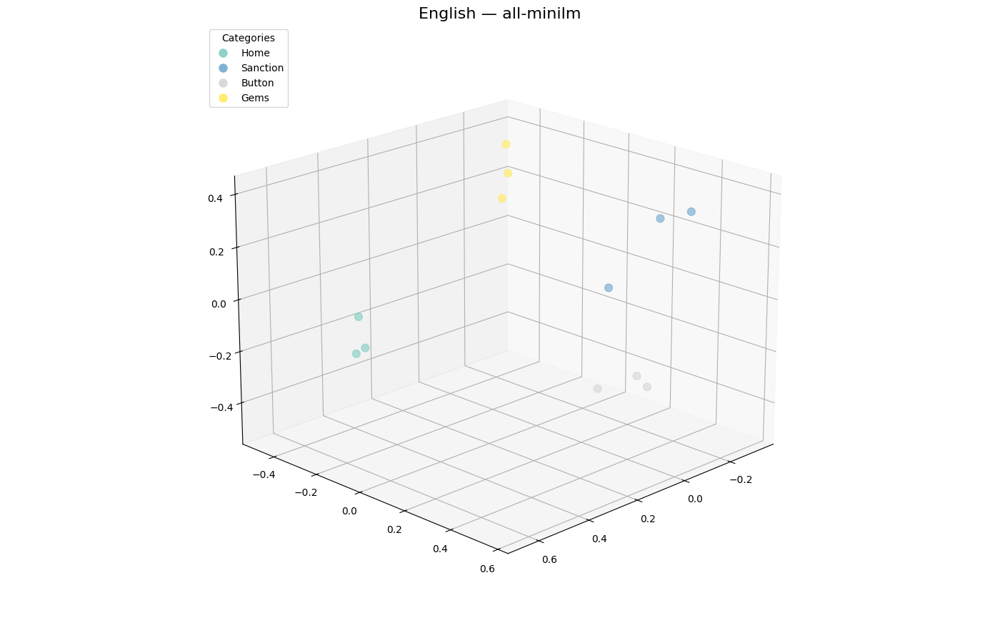

API & Visualisations
Nouvelle méthode
La nouvelle méthode fonctionne comme suit:

On commence par récupérer les synonymes du mot depuis des API, puis on embède le mot (avec son contexte) ainsi que les synonymes. On classe ensuite les synonymes selon leur proximité avec l'embedding du mot et on ne garde que les meilleurs. On peut aussi faire la même chose avec des antonymes.
Comparaison MiniLM et Word2Vec
Pour déterminer quel était le meilleur modèle pour cette tâche, nous avons créé une visualisation afin de voir lequel rapprochait le mieux les différents synonymes. Dans cette visualisation, 4 groupes de 3 mots sont affichés, en anglais et en français (sauf pour Word2Vec, dont le corpus utilisé est exclusivement anglais).
Word2Vec (mots anglais)

MiniLM (mots anglais)

MiniLM (mots français)

On peut voir que, pour Word2Vec deux groupes (« gems » et « button ») sont bien regroupés, mais pas les deux autres. Pour MiniLM, les groupes sont bien regroupés en anglais, mais pas en français.
Au vu de ces résultats, nous avons décidé d'abandonner complètement Word2Vec et d'utiliser MiniLM pour la suite.
Stratégie d'embedding
À l'origine, nous utilisions la même stratégie pour embedder les mots avec MiniLM qu'avec Word2Vec: chaque mot du contexte (tous des synonymes les uns des autres lors des tests) était embeddé individuellement, puis la moyenne des vecteurs était utilisée comme résultat (méthode 1). Nous avons décidé de comparer cette méthode avec une autre, plus adaptée à un modèle qui prend en compte le contexte: concaténer tous les mots du contexte, séparés par des virgules, puis embedder le tout d'un coup (méthode 2).
Pour comparer les deux méthodes, nous avons lancé la recherche de synonymes sur 4 groupes de 3 mots:
- Groupe 1: home, residence, house
- Groupe 2: button, zipper, latch
- Groupe 3: penalty, sanction, sentence
- Groupe 4: ruby, emerald, sapphire
Pour chaque groupe, on récupère la liste des synonymes et on les affiches avec leur score et leur nombre d'occurrences (le même synonyme peut apparaître dans plusieurs API, et plusieurs fois dans la même API). Voici les résultats:
Groupe 1
| Méthode 1 | Méthode 2 | ||||
|---|---|---|---|---|---|
| Synonyme | Score | Occurrences | Synonyme | Score | Occurrences |
| abidance | 0.7958 | 1 | abidance | 0.9731 | 1 |
| enclose | 0.7688 | 2 | manse | 0.9287 | 1 |
| rezidentura | 0.7639 | 1 | enclose | 0.9095 | 2 |
| menage | 0.7485 | 2 | menage | 0.9082 | 2 |
| manse | 0.7222 | 1 | rezidentura | 0.8941 | 1 |
| sign | 0.6891 | 1 | sign | 0.8894 | 1 |
| base | 0.6771 | 1 | firm | 0.8893 | 1 |
| accommodate | 0.6673 | 2 | theater | 0.8865 | 1 |
| firm | 0.6666 | 1 | accommodate | 0.8775 | 2 |
| tenement | 0.6593 | 2 | harbor | 0.8652 | 2 |
| harbor | 0.6489 | 2 | base | 0.8589 | 1 |
| theater | 0.6380 | 1 | harbour | 0.8277 | 2 |
| harbour | 0.6236 | 2 | tenement | 0.8241 | 2 |
| domicile | 0.6151 | 3 | shop | 0.8083 | 4 |
| shop | 0.5999 | 4 | put up | 0.7819 | 2 |
| put up | 0.5895 | 2 | store | 0.7787 | 2 |
| store | 0.5737 | 2 | host | 0.7711 | 2 |
| host | 0.5590 | 2 | domicile | 0.7245 | 3 |
| abode | 0.5245 | 4 | abode | 0.6901 | 4 |
| homeward | 0.6206 | 2 | |||
| residency | 0.5429 | 2 | |||
Groupe 2
| Méthode 1 | Méthode 2 | ||||
|---|---|---|---|---|---|
| Synonyme | Score | Occurrences | Synonyme | Score | Occurrences |
| endpin | 0.7081 | 1 | push | 0.9102 | 1 |
| adjuster | 0.6553 | 1 | endpin | 0.9008 | 1 |
| push | 0.6520 | 1 | blow | 0.8806 | 1 |
| slide fastener | 0.6389 | 3 | adjuster | 0.8092 | 1 |
| blow | 0.6132 | 1 | clit | 0.7725 | 1 |
| clit | 0.5455 | 1 | slide fastener | 0.7202 | 3 |
| zip fastener | 0.5384 | 2 | zip | 0.6318 | 2 |
| endbutton | 0.5212 | 1 | zip up | 0.6314 | 1 |
| zip up | 0.5019 | 1 | endbutton | 0.5855 | 1 |
| zip fastener | 0.5750 | 2 | |||
Groupe 3
| Méthode 1 | Méthode 2 | ||||
|---|---|---|---|---|---|
| Synonyme | Score | Occurrences | Synonyme | Score | Occurrences |
| embargo | 0.7105 | 1 | embargo | 0.8740 | 1 |
| estoppel | 0.7021 | 1 | estoppel | 0.8688 | 1 |
| boycott | 0.6608 | 1 | boycott | 0.8348 | 1 |
| interdiction | 0.6523 | 1 | interdiction | 0.8293 | 1 |
| taboo | 0.6287 | 1 | taboo | 0.7957 | 1 |
| countenance | 0.6153 | 1 | countenance | 0.7884 | 1 |
| injunction | 0.5889 | 1 | proscription | 0.7777 | 1 |
| proscription | 0.5875 | 1 | authority | 0.7736 | 1 |
| punition | 0.5458 | 2 | punition | 0.7174 | 2 |
| authority | 0.5444 | 1 | injunction | 0.6887 | 1 |
| ban | 0.6302 | 1 | |||
| verdict | 0.6016 | 2 | |||
| condemn | 0.5701 | 1 | |||
| sentence | 0.5591 | 2 | |||
| pass sentence | 0.5417 | 1 | |||
| conviction | 0.5352 | 3 | |||
Groupe 4
| Méthode 1 | Méthode 2 | ||||
|---|---|---|---|---|---|
| Synonyme | Score | Occurrences | Synonyme | Score | Occurrences |
| smaragd | 0.7336 | 2 | smaragd | 0.8328 | 2 |
| minionette | 0.7200 | 2 | minionette | 0.7985 | 2 |
| chromatic | 0.6947 | 2 | azure | 0.7662 | 1 |
| azure | 0.6637 | 1 | agate | 0.7341 | 3 |
| ruddy | 0.6277 | 1 | chromatic | 0.7321 | 2 |
| agate | 0.6240 | 3 | ruddy | 0.7072 | 1 |
| crimson | 0.6023 | 1 | crimson | 0.6362 | 1 |
| carmine | 0.5153 | 1 | rubi | 0.6085 | 2 |
| rubi | 0.5029 | 2 | carmine | 0.5928 | 1 |
On voit rapidement que la méthode 2 a tendance à attribuer des scores plus élevés aux synonymes, ce qui n'est pas grave: on peut simplement augmenter le seuil minimal requis pour qu'un synonyme soit retenu (lors des tests, tous les synonymes avec un score supérieur à 0.5 étaient retenus). On remarque aussi que les scores fournis par la méthode 2 sont globalement meilleurs. Nous avons donc choisi d'utiliser cette méthode.
Problèmes
Malheureusement, après avoir fait plus de tests, la qualité des synonymes laissait à désirer, principalement parce que les API ne renvoyaient pas des synonymes de qualité en premier lieu, problème que le filtrage ne suffisait pas à résoudre. La dépendance à des API est aussi problématique car elle nécessite une connexion internet et suppose que les API soient fonctionnelles. Nous avons donc décidé de changer de méthode, comme présenté dans la partie suivante.